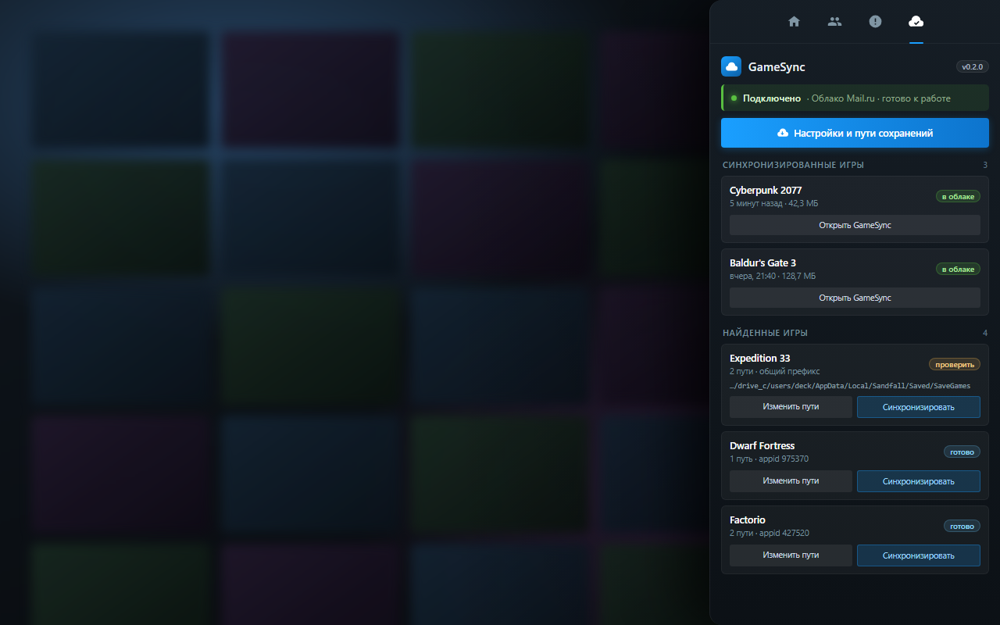
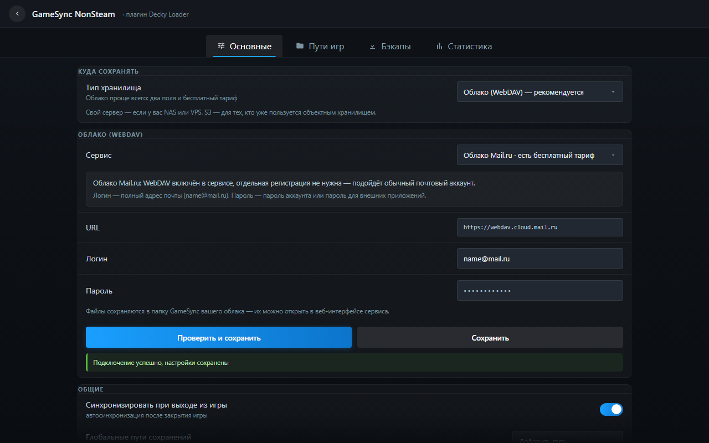
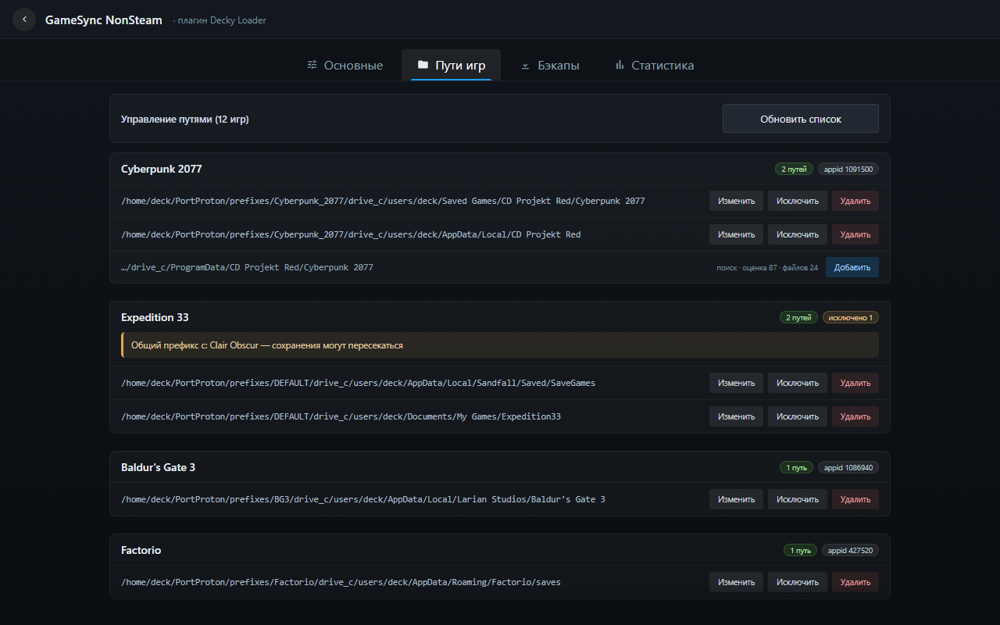
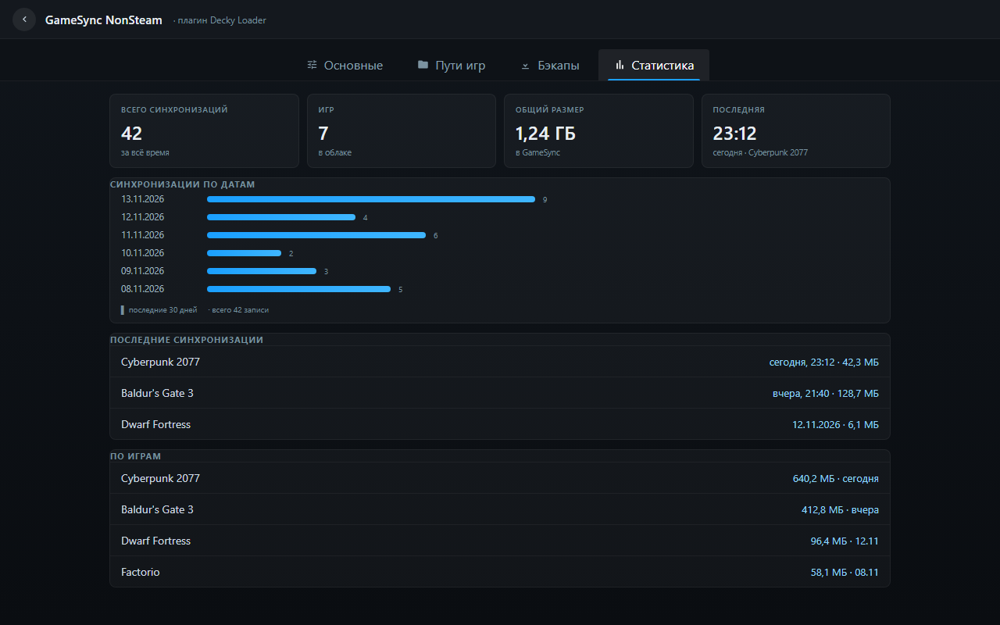
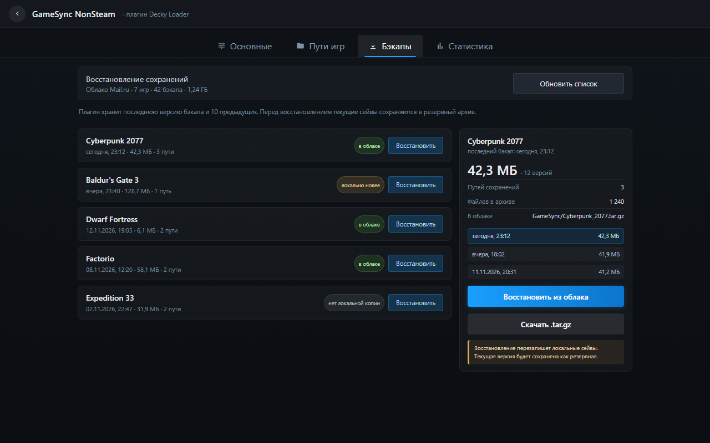
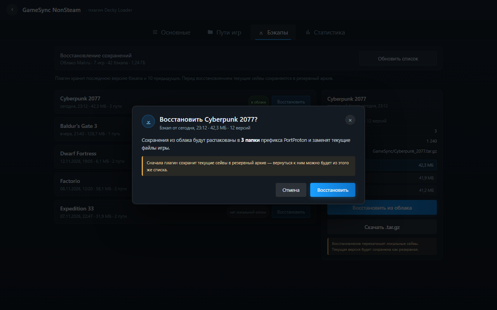
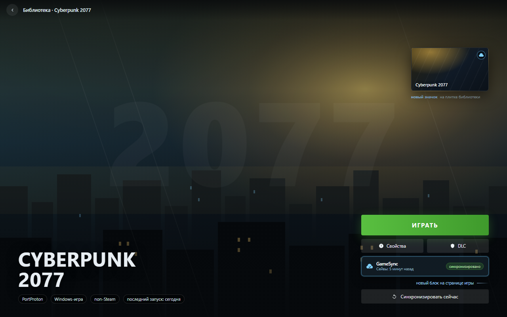

1. Боковое меню (QAM) — плагин открыт в Decky: статус подключения, кнопка настроек, синхронизированные и найденные игры

2. Настройки → Основные — выбор хранилища, пресет, проверка и сохранение

3. Настройки → Пути игр — пути, исключения, найденные кандидаты

4. Настройки → Статистика — сводные цифры, график по датам

5. Настройки → Бэкапы — список сохранений в облаке и восстановление в один клик

6. Подтверждение восстановления — модальное окно с предупреждением о перезаписи

7. Концепт: страница non-Steam игры — значок на плитке и блок GameSync со статусом сейвов